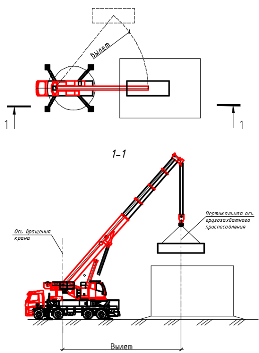
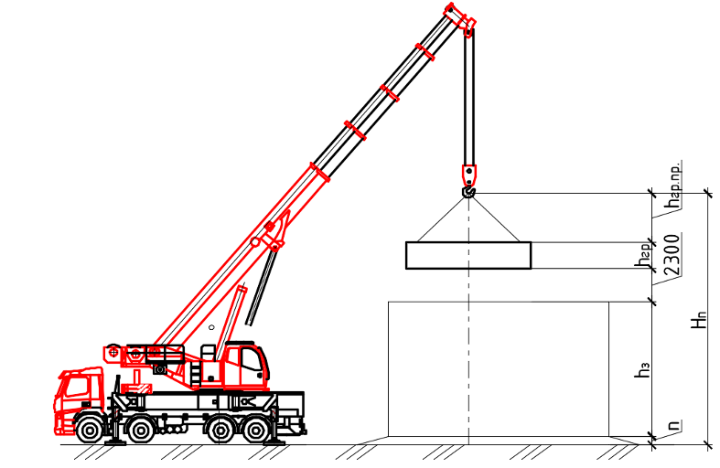
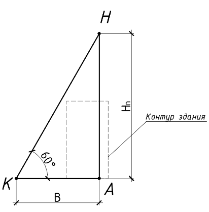
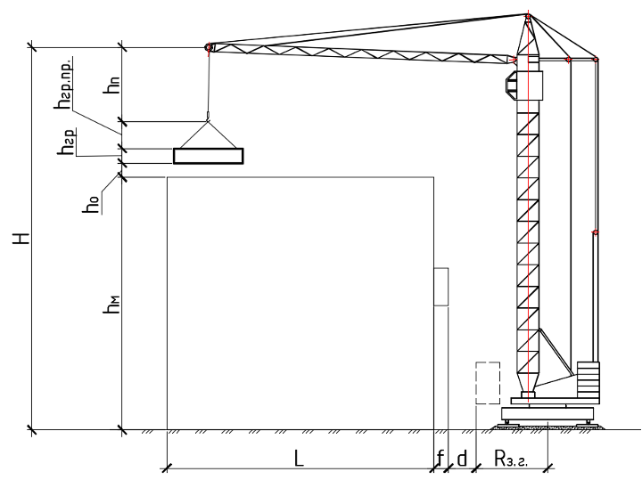
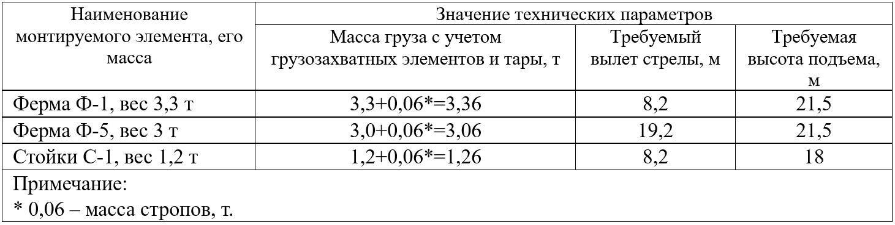
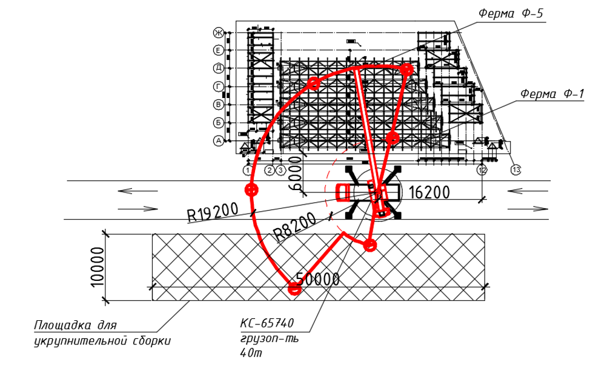
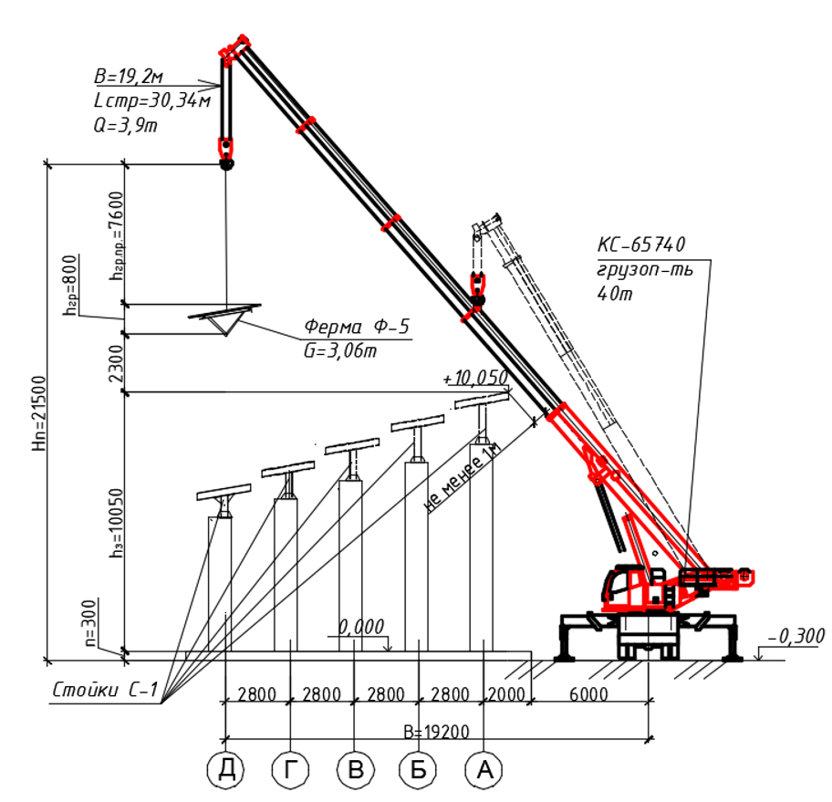
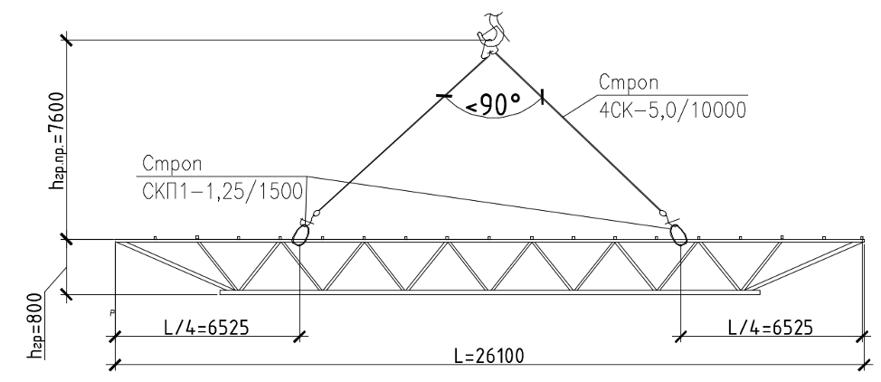
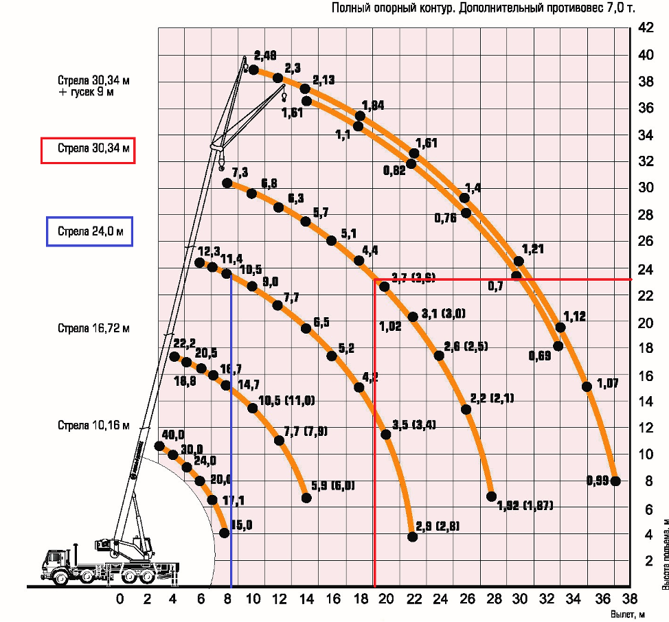

Подбираем качественный строительный кран

После этого урока научитесь подбирать стреловой и башенный кран, сможете вычислить их грузоподъемность, вылет и высоту подъема.
Преподаватель Высшей инженерной школы на примерах покажет, как составлять схемы и таблицы, которые упростят выбор техники для строительных работ и предостерегут от ошибок.
Три главных параметра крана
В начале урока проясним, на какие параметры крана нужно обратить внимание.
Три основных параметра:
- грузоподъемность,
- вылет
- высота подъема.
В отдельных случаях важна глубина опускания.
Грузоподъемность крана подбирают с учетом веса поднимаемого груза и веса грузозахватных приспособлений и тары. При этом учитывают подачу груза в наиболее отдаленное положение.
Как выбрать стреловой кран
Чтобы выбрать стреловой кран, определим его грузоподъемность. Для этого используем формулу:
Q≥Pгр+Ргр.пр+Рн.м.пр+Рк.у.
где Pгр – масса поднимаемого груза, т;
Ргр.пр – масса грузозахватных приспособлений (стропы, захваты, траверсы и пр.), т;
Рн.м.пр – масса навесных монтажных приспособлений (например, навесные подмости), т;
Рк.у. – масса конструкций усиления жесткости, т.
Если используете кран с переменным вылетом стрелы, то его грузоподъемность зависит от вылета. Например, если берете автокран с максимальной грузоподъемностью 25 т, он может поднять максимальный вес 25 т на своем минимальном вылете стрелы. А на максимальном вылете грузоподъемность будет ниже.
Рабочий вылет определяют расстоянием по горизонтали от оси вращения крана до вертикальной оси грузозахватного приспособления.

Высоту подъема определяют по формуле:
Hn = (hз±n) + hгp + hгp.np. + 2,3 м
где h3 - высота верхней отметки здания/сооружения, м;
n - разность отметок стоянки кранов и нулевой отметки здания, м;
hrp - максимальная высота груза, м;
hrp.np - длина грузозахватного приспособления;
2,3 м – запас высоты из условий безопасного производства работ на верхней отметке здания, где могут находиться люди.

Для подбора стрелового крана можно использовать упрощенную графическую схему:

Как построить схему
- Намечаете контур здания в масштабе;
- Наносите ось НА в наиболее отдаленном месте (максимальный вылет стрелы);
- Точку Н ставите на расстоянии от А равной требуемой высоте подъема (Hп);
- Точку К ставите по оси вращения крана. Наиболее рациональное расположение стрелы крана при работе – 60°. Но данный угол не всегда можно выдержать, ориентируйтесь на конкретную ситуацию на объекте, где можно установить кран. Также помните, что стрела крана должна быть на расстоянии не менее 1 метра от выступающих частей здания и сооружения.
- Расстояние от точки К до точки А – требуемый вылет стрелы крана.
Как выбрать башенный кран
Башенный кран подбираем аналитическим способом по грузоподъемности (Q), высоты подъема стрелы (H) и вылета стрелы (В).
Q≥Pгр+Ргр.пр+Рн.м.пр+Рк.у.
где Pгр – масса поднимаемого груза, т;
Ргр.пр – масса грузозахватных приспособлений: стропы, захваты, траверсы и другие, т;
Рн.м.пр – масса навесных монтажных приспособлений, например, навесные подмости, т;
Рк.у. – масса конструкций усиления жесткости, т.
H ≥ hм + hо + hгp + hгp.np. + hп,
где hм - высота верхней отметки здания/сооружения от отметки стоянки крана, м,
hо – высота подъема груза над проектной отметкой, равная 1 м,
hrp - максимальная высота груза, м,
hrp.np - длина грузозахватного приспособления,
hп – высота полиспаста, равная 2 м.
В≥L+f+f’+d+Rз.г.
где L – ширина здания (в случае работы двух кранов – половина ширины здания),
f, f’ – расстояния от осей до выступающих частей здания (при наличии),
d – расстояние между выступающей частью здания и хвостовой частью крана при его повороте, принимаемое равным 1 м,
Rз.г. – радиус, описываемый хвостовой частью крана при его повороте (ориентировочно для кранов грузоподъемностью до 5 т – 3,5м, от 5 до 15 т – 4,5м, свыше 15 т – 5,5м).

При выборе крана ориентируйтесь на технику, которая есть в наличии у организации, если она подходит по характеристикам.
Если техники в собственности нет, подбирают несколько кранов разной конфигурации, которые подходят по характеристикам. Сравнивают их и выбирают экономически выгодный вариант.
Например, может быть экономически невыгодно взять кран с большой грузоподъемностью.
Рассмотрите пример подбора крана.
Объект: сцена у озера. Каркас крытой сцены состоит из металлических конструкций: стоек, колонн, ферм, балок. Навес – покрытие из триплекса.
Заполним таблицу, в которую занесем основные элементы каркаса с их массой, укажем требуемый вылет стрелы для монтажа данных элементов и их требуемую высоту подъема:

Подбор крана ведем для самых «неблагоприятных» условий. В нашем случае это ферма Ф-5.
Определим требуемый максимальный вылет стрелы крана:

По схеме монтажа ферм при данном местоположении крана определяем, что максимальный вылет стрелы крана для монтажа фермы Ф-5 – 19,2м. При таком радиусе действия стрелы крана, он дотянется до фермы Ф-5, а также до площадки укрупнительной сборки.
Для монтажа фермы Ф-1, например, необходим вылет 8,2м.
Определим требуемую высоту подъема для нашего примера:
Hn = ((hз±n) + hгp + hгp.np. + 2,3 м)= 10,05+0,3+0,8+7,6+2,3=21,5м


Когда есть требуемый вылет стрелы и требуемая высота подъема, приступаем к определению грузоподъемности. Нужно, чтобы на вылете 19,2 м, с высотой подъема крюка 21,5м, грузоподъемность крана составляла минимум 3,06т.
Кран подбираем исходя из его графика грузовысотных характеристик. Данным характеристикам соответствует кран максимальной грузоподъемностью 40т. Например, КС-65740.
Проверим кран по его графику грузовысотных характеристик.
По горизонтальной оси на графике откладывают вылет стрелы крана - 19,2 м, по вертикальной оси – высота крюка крана не менее 21,5м. При таких данных грузоподъемность крана будет 3,9 т, что достаточно для монтажа фермы Ф-5.
Также проверим ферму Ф-1.
При монтаже фермы Ф-1 нужно, чтобы на вылете 8,2 м, с минимальной высотой подъема крюка 21,5 м, грузоподъемность крана составляла минимум 3,36т. По графику грузоподъемность крана при данных условиях – 11 т, этого достаточно с большим запасом.

Красная линия – для фермы Ф-5, синяя линия - для фермы Ф-1.
Урок окончен. Теперь вы не ошибетесь с выбором крана.
Переходите к следующему уроку, в котором автор курса подскажет, как правильно выбирать экскаватор.